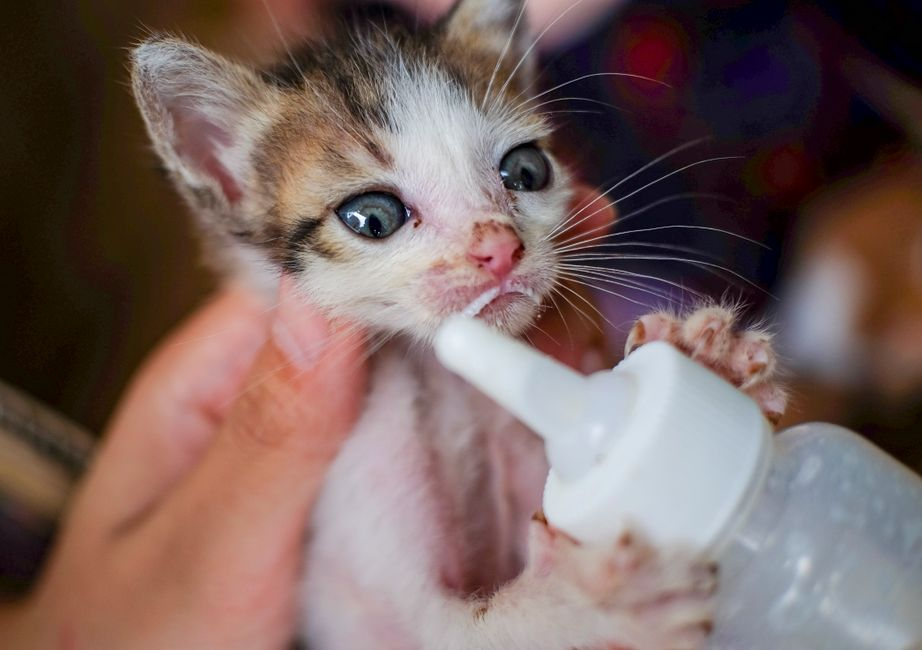

Alimentos adecuados para una alimentación equilibrada de tu nuevo animal
Photo: Kampus Production / Pexels
Bienvenidos a esta guía práctica sobre los alimentos adecuados para una alimentación equilibrada de tu nuevo animal. Este artículo se centra en proporcionar información útil y concreta para que puedas asegurarte de que tu mascota reciba la nutrición necesaria desde el principio.
1. Comer alimento específico para el tipo de mascota
Si tienes un perro o un gato, es esencial que ofrezcas alimento específico para su especie. Estos alimentos están formulados para satisfacer las necesidades nutricionales de tu mascota, incluyendo proteínas, grasas, fibra, vitaminas y minerales. Por ejemplo, si tu perro es un cachorro de 6 meses, debes optar por un alimento balanceado que cumpla con las necesidades de crecimiento y desarrollo. Evita ofrecer alimento para adultos, ya que puede no contener todos los nutrientes necesarios para un cachorro.
2. Incorporar verduras y frutas en las raciones

Photo: DUONG QUÁCH / Pexels
Además del alimento específico, puedes incorporar algunas verduras y frutas en la dieta de tu mascota. Para un perro, puedes ofrecer una pequeña porción de zanahoria, pimientos o brócoli. Para un gato, las opciones recomendables son la calabaza o las remolachas. Sin embargo, es importante asegurarte de que no estén en exceso y no contengan ingredientes que puedan ser tóxicos para mascotas, como uvas o cítricos.
Ejemplo práctico:
Si tienes un perro de 8 meses, puedes ofrecerle 100 gramos de zanahoria al día, siempre que sea bien cocida y sin sal. Esto no solo le proporcionará fibras, sino que también ayudará a prevenir enfermedades del intestino.
3. Evitar alimentos humanos en exceso
Aunque es tentador compartir tus alimentos con tu mascota, es importante evitar darle alimentos humanos en exceso. Algunos humanos alimentos, como chocolates, fresas o pan, pueden ser perjudiciales para tu mascota. Incluso alimentos como el queso o el pescado que son saludables para ti, pueden ser indigestos o alergénicos para tu mascota.
Ejemplo práctico:
Si decides compartir una merienda con tu perro, opta por darle una porción pequeña de un alimento específico para mascotas o un trozo de carne de pollo sin grasa. Evita darle más de 10 gramos al día, ya que esto puede afectar a su dieta equilibrada.
4. Mantener una hidratación adecuada
Es crucial mantener a tu mascota hidratada. Asegúrate de que siempre tenga acceso a agua fresca y limpia. Los perros y gatos necesitan beber agua de 15 a 20 mililitros por cada 100 gramos de peso corporal al día. Esto significa que un perro de 5 kilogramos debe beber aproximadamente 75 mililitros de agua al día.
Ejemplo práctico:
Si tienes un gato de 4 kilogramos, asegúrate de que tenga al menos 40 mililitros de agua al día. Puedes colocar un dispensador de agua en diferentes áreas de la casa para que siempre tenga acceso a la bebida.
5. Consultar a un veterinario
Antes de hacer cambios significativos en la dieta de tu mascota, es recomendable consultar con un veterinario. Ellos pueden proporcionarte una dieta personalizada basada en la raza, la edad y el estado de salud de tu mascota. También pueden recomendar suplementos si es necesario, como vitamina D o ácidos grasos omega-3, para asegurar que tu mascota reciba todos los nutrientes necesarios.
Ejemplo práctico:
Si tienes un perro de raza pequeña de 3 meses, tu veterinario puede recomendarte un alimento específico para cachorros y una ración diaria de 50 gramos, distribuidos en dos comidas.
Conclusión
Siguiendo estos cinco consejos, podrás proporcionar una alimentación equilibrada y saludable para tu nuevo animal de compañía. Recuerda que la clave está en la consistencia y en consultar con un experto si tienes dudas. Con estas pautas, tu mascota estará en el camino hacia una vida saludable y plena.